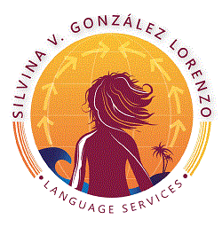
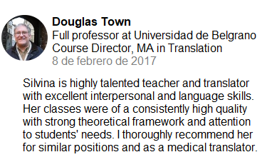
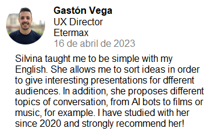

Silvina V. González Lorenzo
Language Services
Quién soy
About meRecomendación
 Ver másRecomendación
 Ver másMy Word of the Year 2023...
from The Merriam-Webster Dictionary API:
algorithm
Definición obtenida gracias a una API